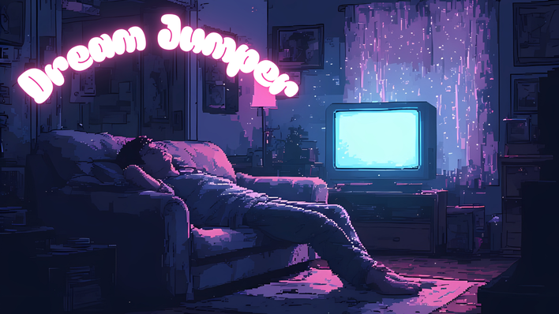

Dream Jumper
Narrative Design · Environmental Storytelling
Dream Jumper is a first-person liminal horror walking simulator with roguelite elements. You play as Elias, a young man who falls asleep and enters the dreams of the people around him — familiar spaces warped just past recognition, each holding fragments of a life he is trying to understand. The game has no cutscenes, no explicit exposition, and minimal dialogue. Every piece of story the player receives comes through space, sound, and the behaviour of the environment itself.
This page documents the narrative design approach behind the project — specifically how personal narrative and environmental storytelling were designed to work as a single system rather than two parallel tracks.
Elias is not a hero. He is someone who does not know how to stop moving long enough to feel what is happening to him. The roguelite structure mirrors this directly: each run is another night, another attempt, another refusal to stay still. The emotional arc is built around a central absence — his girlfriend Sara, whose dream is the final level and the only one he cannot fully enter. Every other dream he visits is preparation for that confrontation, and every environmental detail across the game is a fragment of their shared history seen from the wrong angle. The design challenge was making a protagonist legible without giving him a voice. The solution was to make the spaces react to him rather than describe him. Doors that open too easily. Rooms that are too familiar. Objects in the wrong place by exactly one degree. The horror of Dream Jumper is not what is in the rooms — it is the creeping sense that the rooms know Elias better than he knows himself.
Key narrative pillars for Elias:
- No object exists purely for decoration — every item is a narrative choice
- Lighting and shadow carry emotional information, not just atmosphere
- Sound design is written alongside spatial design, not added after
- The player's movement speed is a narrative tool — liminal spaces slow you down deliberately
Playdate:the second level, applies the same logic to childhood memory. The domestic uncanny: a child's bedroom where nothing is quite wrong but everything is slightly too quiet, slightly too neat, slightly too preserved. The narrative question the level asks is whether some memories are kept intact because they bring comfort or because they cannot be changed.
The most important lesson from Dream Jumper's narrative design was the difference between hiding story in the environment and building story into the environment. Hidden story assumes the player will find it. Built-in story communicates even to players who never look — because it shapes the feel of the space regardless of whether the player consciously registers it.
The second lesson was about restraint. The first draft of Silent Pool had too many objects, too many deliberate narrative details. The revision stripped it back to a third of the original content and the level became dramatically more effective. Emptiness is a narrative choice. What is absent tells as much story as what is present.